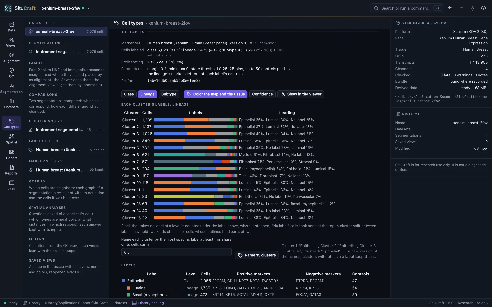
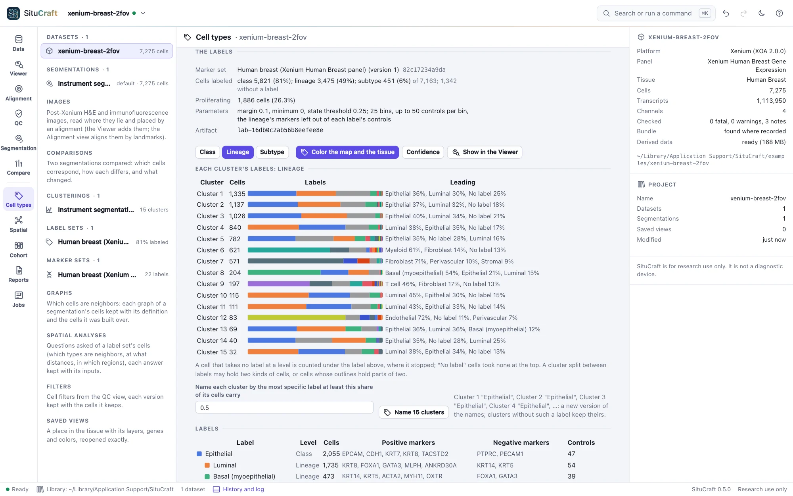
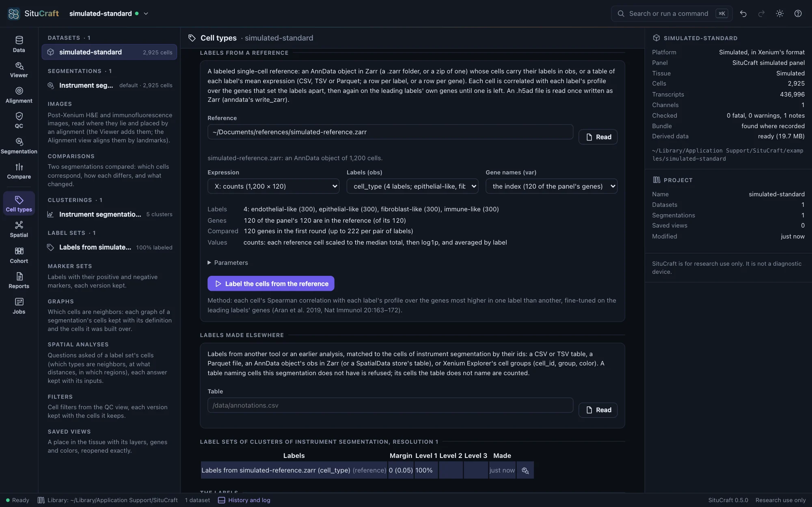
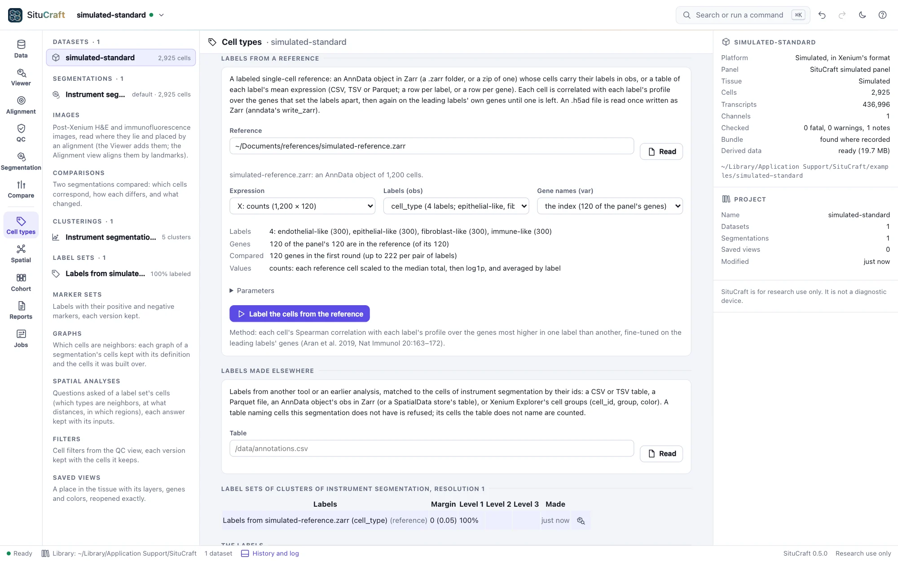
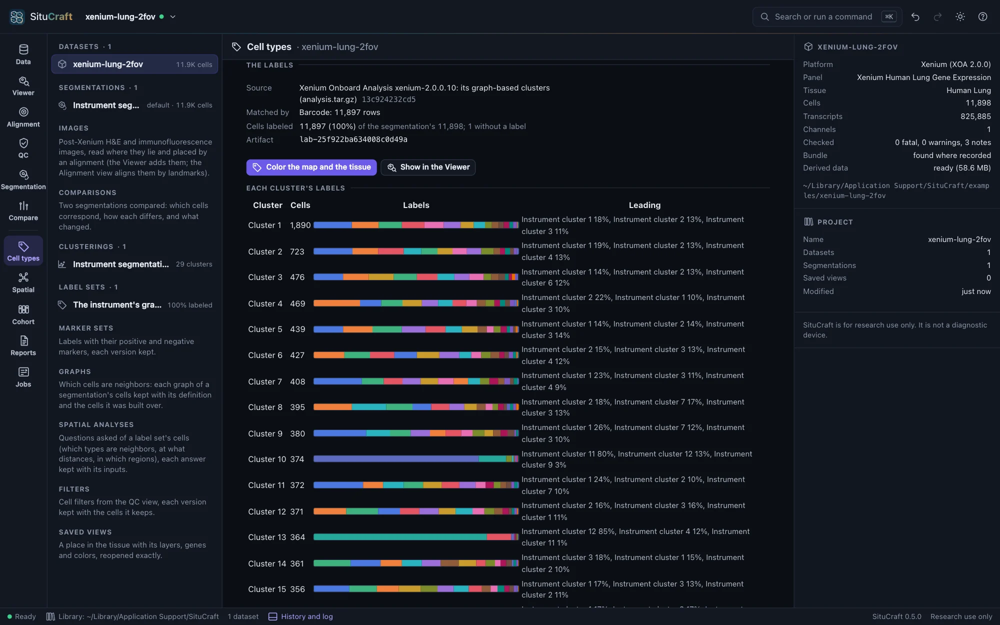
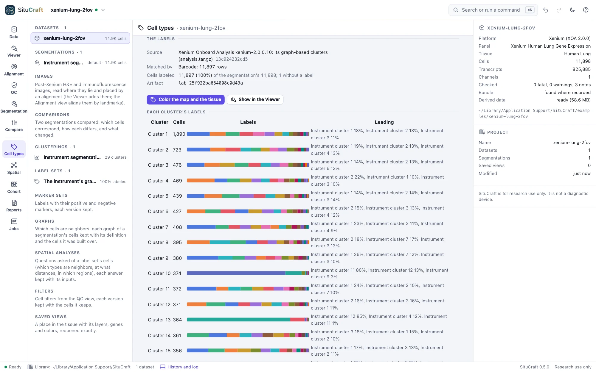
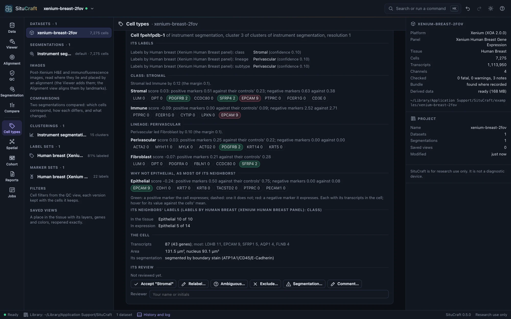
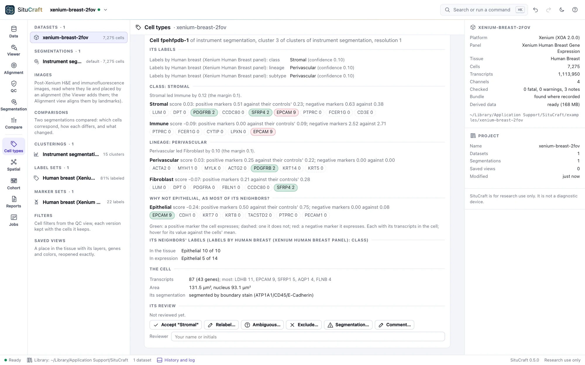
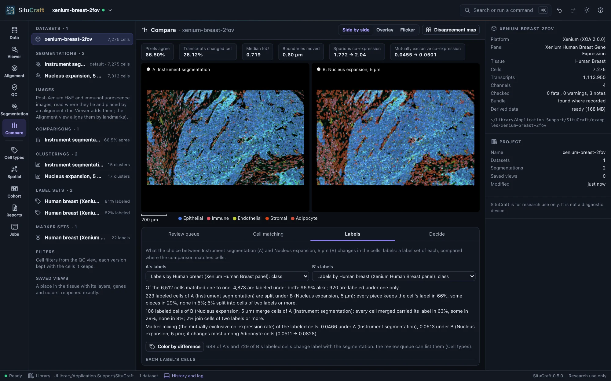
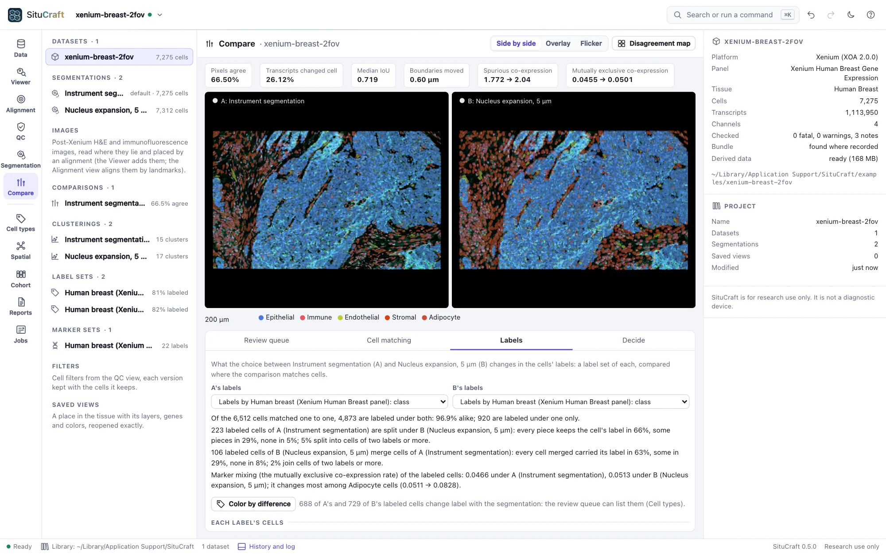

Labels
Labels name the cells: from known marker genes, from a labeled single-cell reference, or made elsewhere and imported. They are predictions, so SituCraft keeps each set with what it came from, shows each cell's evidence, and ranks the cells most worth reviewing.
Labels from markers
Under a clustering, Labels from markers labels each cell from the genes known to mark cell types. A marker set is a hierarchy of labels (a class such as Immune, a lineage such as T cell, a subtype such as CD8 T cell) and states (Proliferating), each with positive markers, the genes its cells express, and negative ones, genes they do not. SituCraft offers a starter set for each example's panel, from published breast and lung cell atlases (the Sources), every marker in the panel.


Label the cells scores each cell for each label: its markers' expression less that of control genes of similar average expression (as scanpy's score_genes scores a gene list), its negative markers counting against it where the cell expresses them. Labels are then taken from the top down: a cell takes the best class when it leads the next by the margin, then the best of that class's lineages, and so on; where no label leads, the cell stays at the level above, so a T cell whose CD4 and CD8 markers are both faint stays a T cell. Each cell's confidence is how far its label led. A label set is kept as an artifact with the marker set it came from and every parameter; asking again answers it.
Under the labels:
- Each cluster's labels at the level chosen (Class, Lineage, Subtype), as bars. A cluster split between labels may hold two kinds of cells, or cells whose outlines hold parts of two.
- Name the clusters by the most specific label at least half (or a share you choose) of each cluster's cells carry: a new version of the names, which you can edit. Clusters given the same name merge on the map and the tissue.
- Color the map and the tissue by the labels, their confidence, or one label's score (choose it in the labels' table, which lists each label's markers and control genes). The Viewer's Fill by lists each label set's levels.
Edit the marker set to add labels, levels or states, or change markers (the panel's genes are offered as you type, and those it lacks are marked). Saving makes a new version, kept with the earlier ones and the labels made from them. Save as a file writes the set as JSON, and Read a file… reads one (Formats); a set naming genes the panel lacks offers to remove them.
Starter sets are a starting point. Markers that hold in an atlas may not in your tissue (in the Breast example the tumor cells express LPL, an adipocyte marker), and in a tissue one type dominates, its own markers score low against control genes that are mostly its other genes, so many of its cells may stay without a label. Check each cluster's labels against its markers before naming it.
Labels from a reference
When a labeled single-cell dataset of the same tissue exists (an atlas, or your own single-cell experiment), Labels from a reference labels each cell by the reference label it most resembles. Name the reference (its path on this computer) and Read it: an AnnData object saved with write_zarr (a .zarr folder, or a zip of one), whose cells carry their labels in an obs column, or a table of each label's mean expression (CSV, TSV or Parquet, a row per label or per gene). An .h5ad file is written as Zarr in one line of Python: anndata.read_h5ad("reference.h5ad").write_zarr("reference.zarr").


SituCraft suggests the reference's expression (counts preferred), its column of labels and its column of gene names, and says what it found: its labels and their cells, how many of the panel's genes it has (and which it lacks: if it has few, check that its genes are named by symbol, and the species), and how many will be compared. Label the cells from the reference then correlates each cell with each label's profile (its reference cells' mean expression) over the genes that set the labels apart, and scores the leading labels again on their own genes until one is left (as SingleR does, Aran et al. 2019). Each cell's confidence is how far its label led the next, in correlation. The label set is kept with the reference as it was compared and its SHA-256.
The labels follow the reference: a reference of other cells (an atlas of healthy tissue for a tumor, say) gives each cell the nearest label it has, which may be wrong. The evidence card (Reviewing labels) shows, for each cell, how close the leading labels were and which genes set its label apart from the next. To try it, situcraft simulate --reference 300 <folder> writes a simulated tissue and a reference of its types beside it.
Labels made elsewhere
Labels from another tool or an earlier analysis (a colleague's annotation, a reference mapping, the instrument's clusters) are imported under Labels made elsewhere, for the segmentation's cells. Name the table (its path on this computer) and Read it: a CSV or TSV file, a Parquet file, an AnnData object saved with write_zarr (or a SpatialData store), or Xenium Explorer's cell groups. SituCraft lists the columns and suggests which holds the cells' ids, which their labels, and, optionally, a confidence and colors; change them if they are wrong. Before you import, it says how the ids match: a table naming cells this segmentation does not have is refused (its labels were made for another segmentation, or another sample), and the cells it does not name will have no label. Or the instrument's clusters imports one of the instrument's clusterings as labels.


An imported label set is shown like one from markers: each cluster's labels (here, how SituCraft's clusters of the Lung example split among the instrument's), names for the clusters from them, the map, the tissue and the Viewer colored by them, and a label's cells selected when you choose it. Its file is recorded by its SHA-256, so the project says exactly what was imported.
Reviewing labels
Labels are predictions. Under Label versions each label set of the segmentation is listed: from markers or a reference, imported, curated and consensus. Curate begins a curated set from a predicted one: its labels, with your changes appended, each with its reason, who made it and when (the predicted set stays as the method made it). Make a consensus… combines sets by a rule: unanimous (every set gives the label), majority (at least so many sets, more than any other label) or in order (the first set's label, else the next's); labels the sets name differently can be mapped to a common name. Any two versions are compared side by side in a table of their labels.


Review ranks the cells to look at first: those whose label few of their nearest cells in the tissue share while most share another (a lone label among others is often a mislabel, two cells in one outline, or a cell at a boundary), those whose label changes under another segmentation (choose the label set of it in Label changes against; below), and those of low confidence. Choose a cell, in the list or on the map or the tissue, to see its evidence: its label in every version; for labels from markers, why it took its label and not the next, gene by gene in the cell (green, a marker it expresses; red, a negative marker it expresses), and why not the label its neighbors carry; for labels from a reference, each round's correlations and the genes higher in its label's profile and in the next's that the cell expresses; what its counterparts carry under the other segmentation; its neighbors' labels in the tissue and in expression; its transcripts and its segmentation's flags. Accept its label or Relabel it, saying why (or mark it ambiguous, exclude it, record a segmentation concern, comment); the decision is recorded as a review (Reviewing cells and regions), a relabel added to a curated set, and the next cell is shown.
Labels under two segmentations
Cell types are read from cells, so the segmentation chosen can change them: a cell drawn too wide takes its neighbor's transcripts and may take its neighbor's label; a cell split in two may become two kinds. To see how much, compare two segmentations (Segmentation view), then, under a clustering's label sets, Make this clustering and its label sets again on the other segmentation: the clustering with the same parameters, its map, and each label set from markers or a reference, in one step (imported labels belong to their segmentation's cells and are not made again; a QC filter's cells are the instrument segmentation's, so the cells are then those with enough transcripts).


The comparison's Labels tab (Compare workspace) reads a label set of each segmentation through the comparison (by default two made the same way, at their first level):
- How many cells keep their label: of the cells matched one to one, the share labeled alike, and every change (T cell → Macrophage, and so on); what split cells' pieces carry (the cell's label, some of them, or none) and what merged cells carried.
- Each label's cells under each segmentation, and the change in its share.
- Marker mixing by label: of each label's cells, the share expressing two mutually exclusive markers together, and the mutually exclusive co-expression rate among them. Under a segmentation that gives cells their neighbors' transcripts, it rises.
- The differences whose labels change, the most transcripts reassigned first; each opens where it lies. Color the cells by their labels fills each side's cells with its labels' colors.
The cells whose label changes are segmentation-sensitive: the review queue lists them when you choose the other segmentation's label set in Label changes against, with what their counterparts carry.